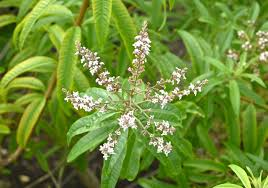

Plantas Relajantes
Valeriana
Valeriana officinalis
Rátsi

Manzanilla
Matricaria chamomilla
Manzanilla

Cedrón
Aloysia citriodora
Cedrón

Hierba Buena
Mentha spp.
Hierba buena

Menta
Mentha spp.
Minta
×
Lenguaje denotativo
Planta herbácea perenne con flores blancas o rosadas y un rizoma aromático.×
Descripción literaria
La valeriana es como un refugio silencioso en medio de la noche. Su presencia evoca descanso, calma y serenidad, como si la naturaleza misma ofreciera un susurro que invita al cuerpo a relajarse y a la mente a encontrar paz después de un día agitado.×
Usos medicinales
Se usa para tratar ansiedad, insomnio y tensión nerviosa.×
Importancia cultural
Considerada una planta vinculada al descanso y al bienestar.×
Lenguaje denotativo
Planta herbácea anual de la familia Asteraceae con flores blancas y amarillas.×
Descripción literaria
La manzanilla es una flor pequeña que guarda una gran suavidad. Su aroma delicado recuerda a los campos tranquilos donde sopla una brisa tibia, transmitiendo una sensación de calma, consuelo y cuidado natural.×
Usos medicinales
Alivia estrés, ansiedad y problemas digestivos.×
Importancia cultural
Muy utilizada en infusiones tradicionales en muchas culturas.×
Lenguaje denotativo
Arbusto aromático de la familia Verbenaceae con aroma a limón.×
Descripción literaria
El cedrón desprende un perfume fresco que parece acariciar el aire. Sus hojas alargadas guardan un aroma cítrico y suave que transmite tranquilidad, como si cada hoja llevara consigo la frescura de la mañana y la calma del campo.×
Usos medicinales
Usado para calmar nervios, estrés y problemas digestivos.×
Importancia cultural
Muy popular en infusiones tradicionales sudamericanas.×
Definición científica
Planta herbácea aromática de la familia Lamiaceae.×
Descripción literaria
La hierba buena es un soplo fresco de la naturaleza; sus hojas aromáticas despiertan los sentidos y traen consigo la sensación de calma y alivio. Su fragancia recuerda a los jardines húmedos después de la lluvia, donde el aire se llena de vida y serenidad.×
Usos medicinales
Ayuda con digestión, náuseas y dolores de cabeza.×
Importancia cultural
Usada en muchas culturas como símbolo de hospitalidad.×
Lenguaje denotativo
Planta herbácea aromática del género Mentha.×
Descripción literaria
La menta es como un susurro verde que refresca el cuerpo y el espíritu. Su aroma intenso y limpio parece recorrer el aire como una brisa ligera, dejando una sensación de claridad, vitalidad y renovación.×
Usos medicinales
Alivia problemas digestivos y dolores de cabeza.×